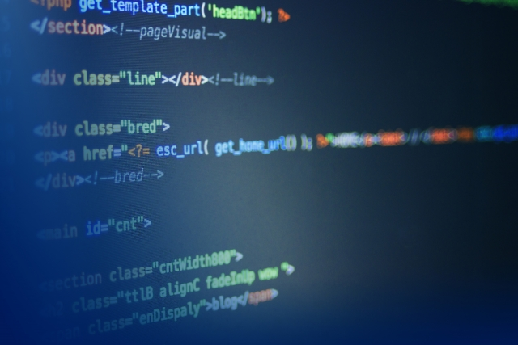

勉強歴

ほとんどの日で、最低でも1時間はプログラミングの勉強をする時間を設け、多いひには10時間以上パソコンに向かっている時もありました。 検索しているの時間も含めると400時間は学習したと思います。
勉強方法
独学（Progate、ドットインストール、YouTube）
Progate6割、ドットインストール１割、YouTube３割程の割合で使っていました。
・Progateはプログラミングに親しむ為の入門教材としてはじめに学習しました。HTML、CSS,Javascript、php、Ruby、MySQL、コマンドライン、JQueryを完了しました。ほとんど1周ずつのみで幅広く浅く学びました。
・ドットインストールは12月に長期インターン選考の時に課題として視聴するように言われ、そこで学びました。HTML、CSSは復習がてら視聴し、データベースの部分は理解が浅かったので２、３周視聴しました。
・YouTubeは環境構築や自分でプロダクトを作成する時に使用しました。ポートフィリオの作り方、気をつけることなど参考にしました。
経験
有り（実務経験３ヶ月弱）
1月からweb制作会社で長期インターンとして働かせていただいています。毎週最低24時間以上稼働しています。最初に入ったプロジェクトは40〜50ページ規模でレスポンシブ対応の中古品買取サイトの制作です。
デザインは決まっていたのでマークアップと動作などに部分をこの会社で請負、自分はマークアップの部分を担当しました。
GitHubを使い１０人前後で開発を行い、ワードプレスを使ってPHPでコードを書きました。 初めてSassを使ったのですが管理のしやすさに驚きました。次はEC機能を導入した簡単サイトや、Nuxt,jsを使った開発の案件をする予定です。
使える言語、技術
HTML、CSS、Sass、Javascript、PHP、WordPress
・HTML シングルカラムのページが問題なく制作できる、タグや属性の基礎の理解ができている
・CSS 主要なプロパティ(display 、margin、paddingなど）を理解し、Chromeの検証機能でリアルタイムで試しながら使える
・Sass インターン先の案件で使用したのみ、fundation,conponentなどの理解はしている程度
・Javascript ポートフォリオやインターン先の案件で２、３機能作った程度。（ハンバーガーメニュー やトップへ戻るボタン、入れ替わるキービジュアル）
・PHP ワードプレスで制作していたので、index.phpやheader.phpなどphpでテンプレートを取得して表示させる仕組みで記述量を減らしていました。
・Wordpress 新規テーマの作成と形で案件をこなしました。
・レスポンシブ対応 spやpcというクラスをつけdisplay:noneで片方の要素を常に非表示する仕組みでした。メディアクエリやブレイクポイントも足りないところは自分で学習して実践で使えるようにしました。
ツール、環境
MacBook Air(2017or2020)、local by flywheel、GitHub、VScode、Slack、Asana
MacBook Air(2017)少し重いので今年中にm-1チップのマックに買い換えようと思っています、、、
ローカル環境はlocal by flywheelで構築しました。Dockerは自分で一度つかってサイトを立ち上げたことはありますが、操作や仕組みはよくわかっていない状況です。担当する案件や入る企業先で必要になれば勉強します。